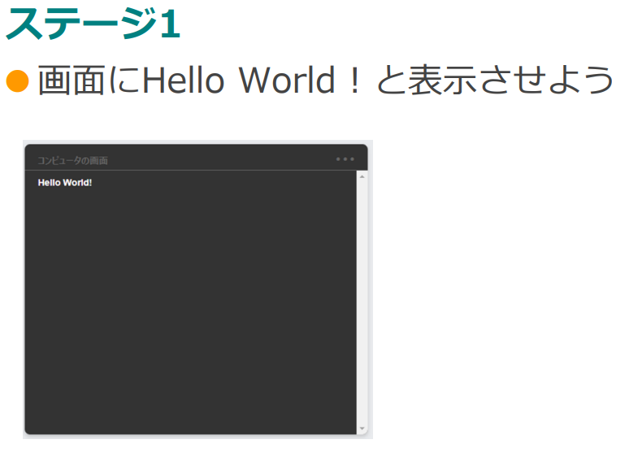
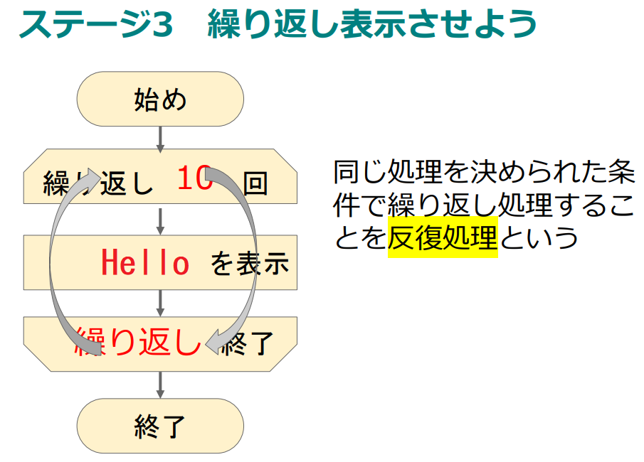

What you'll learn
- サーバと通信をしてメッセージを送信することができる。
- 順次処理、反復処理、分岐処理を理解してプログラムを制作することができる。
スライド | 指導者 |
| 前回同様、ログインする際は気をつけましょう。 |
| ログイン画面で、クラスID、出席番号、自分のパスワードを入力しましょう。 |
| このホーム画面になったら準備完了です。ここまでは自分で始業時に準備できるようになっておきましょう。 |


パスワードを忘れてしまった生徒はリセットをかけて、もう一度初期登録から行わせてください。
- サーバと通信をしてメッセージを送信することができる。
- 順次処理、反復処理、分岐処理を理解してプログラムを制作することができる。
サーバってどんなもの？
必要に応じて調べてみてください。
生徒の皆さんが使っているパソコンなどは直接、通信をやり取りしてメッセージを送っているわけじゃないということを知ってもらいます。（BluetoothやAirDropのように近くの端末間で直接通信を行う規格もありますが、今回はサーバを介して通信を行います）
※生徒は端末間同士が図のように直接やり取りしているイメージを持っています。
そのイメージを払しょくできるように指導をしていきましょう。
スライド | 指導者 |
 | Lesson２を始めていきましょう。 ステージ１では画面にHello World！と表示させます。 やってみましょう。 |
| 決められた命令を上から順番に実行されるプログラムのことを順次処理といいます。 運動会のプログラムも順番通りに競技を行いますね。だから、運動会も順次処理にあたります。 |
 | 次はHelloを10回表示するプログラムを作りましょう。 同じことを繰り返す処理を反復処理と言います。 |

プログラムの基本はここまでです。
次は、サーバとの通信です。
プログラムを作って実行してみましょう。 「接続成功しました！」と表示されます。 このときの、192.168.0.1という数字はIPアドレスです。インターネット上のサーバの住所になります。 でも、これだけだと何が起きたかよくわかりませんね。 | |
| プログラムを作って「こんにちは」と送ったけど、画面には「こんにちは」が見当たりません。 どこへ行ってしまったのでしょう... |
先生用管理画面からチャットを表示してください。 ここに「こんにちは」と表示されているはずです。自分の名前も確認できますか？ | |
今度は自分のニックネームを送ってみましょう。 そして応答結果が表示されますか？ 正面のスクリーンで自分のニックネームがちゃんと送信されているかも確認しておきましょう。 サーバにメッセージを送る動作が少しわかってきましたね。 | |
次のステージは分岐処理を行います。分岐処理を考える場合、家を出る時を考えてみましょう。皆さんは今朝、傘をさして学校に来ましたか？ 無意識のうちに図のような判断をして、学校に来たはずです。 このように、ある条件によって実行するプログラムを決定するしくみを分岐処理と言います。 それではステージ７をやってみましょう。 | |
ステージ７は無事に動作しましたか？ そのプログラムの動きをプリントのフローチャートに書き表してみましょう。 |

この時間の目標
- サーバと通信をしてメッセージを送信することができる。
- 順次処理、反復処理、分岐処理を理解してプログラムを制作することができる。
どうでしょうか？
サーバというものが少し身近に感じられるようになったでしょうか？
今日はサーバに対して単語を送っただけですが、LINEのように文章は送れませんでした。
次回はいよいよ文章をやり取りするしくみをプログラミングしていきましょう。